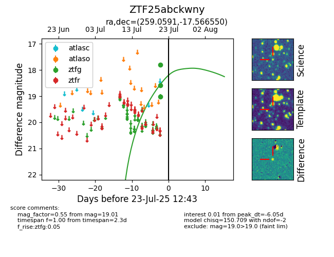

Target ZTF25abckwny at 2025-07-23 12:43, see:
FINK: fink-portal.org/ZTF25abckwny
Lasair: lasair-ztf.lsst.ac.uk/objects/ZTF25abckwny
ALeRCE: alerce.online/object/ZTF25abckwny
alt names
ZTF25abckwny (ztf,fink)
coordinates:
equatorial (ra, dec) = (259.0591,-17.56655)
galactic (l, b) = (5.9534,+11.81691)
photometry
last ztfg=19.01
3 ztfg detections
